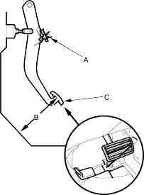
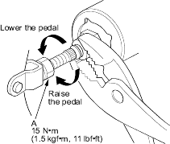
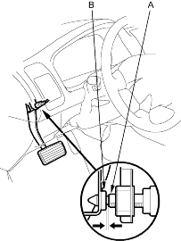
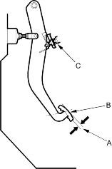

- Turn the brake pedal position switch (A) counter-clockwise, and pull back it until it is no longer touching the brake pedal.
- Lift up the carpet. At the insulator cut-out, measure the pedal height (B) from the middle of the right side (RHD: left side) of the pedal pad (C).
Standard Pedal Height (with carpet removed):
4-door:
| A/T: 188 mm (7.40 in.) |
| M/T: 184 mm (7.24 in.) |
5-door:
| A/T: 184 mm (7.24 in.) |
| M/T: 180 mm (7.09 in.) |

- Loosen the pushrod locknut (A), and screw the pushrod in or out with pliers until the standard pedal height from the floor is reached. After adjustment, tighten the locknut firmly. Do not adjust the pedal height with the pushrod pressed.

- Push in the brake pedal position switch until its plunger is fully pressed (threaded end (A) touching the pad (B) on the pedal arm). Then turn the brake pedal position switch clockwise to lock it.

- Check the brake pedal free play as described below.
Pedal Free Play
- With the engine off, inspect the play (A) on the pedal pad (B) by pushing the pedal by hand.
Free Play: 0.4 – 3.0 mm (0.016 – 0.118 in.)

- If the pedal free play is out of specification, adjust the brake pedal position switch (C). If the pedal free play is insufficient, it may result in brake drag.